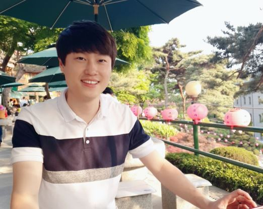
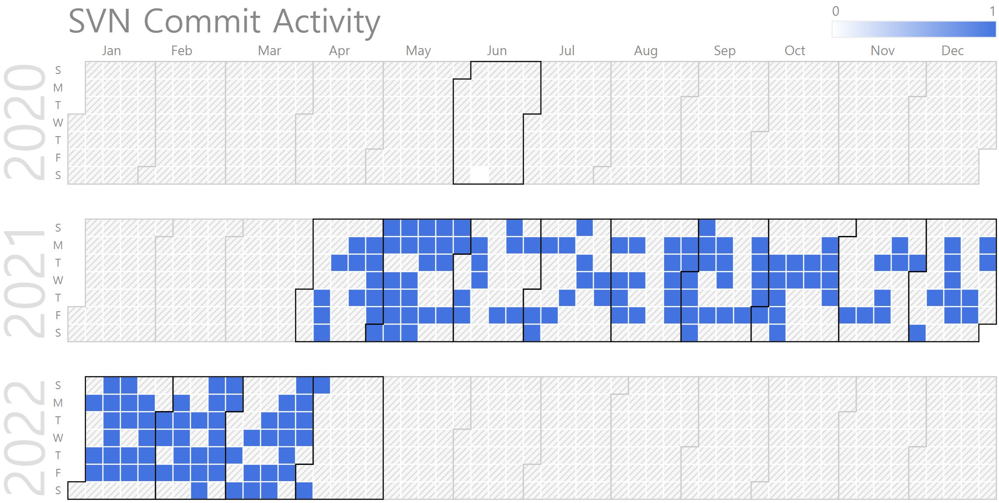

Sunghoon Hong (Ph.D. Candidate, Senior Engineer in Carnavicom)
|  | Ph.D. Prospective Candidate, Senior Engineer in Carnavicom . |
Repository Commit History
|  |
Introduction
Full Bio Sketch
Sunghoon Hong (Ph.D. Course) received the M.S. degree in Intelligent Robot Engineering at Hanyang University, Seoul, Korea, in 2016. His main interest is Human-Like Autonomous Driving Systems. He has a lot of experience in autonomous driving technologies such as SLAM (Simultaneous Localization And Mapping), ADAS (Advanced Driver Assistance Systems), PID (Proportional-Integral-Differential) control, machine learning, path-planning and navigation algorithms and has published several journal/conference papers. Currently, He was a research engineer at Carnavicom.Co., Ltd. from 2021 and Department of Electronics, Kyungpook National University, Daegu, Korea from 2021. He is researching technologies to optimize deep learning-based object detection algorithms for human-like artificial intelligence autonomous driving systems to be applied to low-power embedded systems.
Research Topic
 Eyes are the most important factor for a person to drive a vehicle. Human-like autonomous driving systems use camera sensors to recognize vehicles, bicycles, people, lanes, roads, signs, traffic lights, etc. through deep learning technology. This information helps estimate the vehicle's current location and drive autonomously along its global path to its final destination. However, there is a limit to directly applying deep learning technology to embedded systems, algorithm optimization techniques are required. In this way, I would like to intensively research optimization techniques to develop vision-based human-like autonomous driving technologies in real-time low power embedded systems.
Eyes are the most important factor for a person to drive a vehicle. Human-like autonomous driving systems use camera sensors to recognize vehicles, bicycles, people, lanes, roads, signs, traffic lights, etc. through deep learning technology. This information helps estimate the vehicle's current location and drive autonomously along its global path to its final destination. However, there is a limit to directly applying deep learning technology to embedded systems, algorithm optimization techniques are required. In this way, I would like to intensively research optimization techniques to develop vision-based human-like autonomous driving technologies in real-time low power embedded systems.
Publications
Journal Publications (KCI 2)
Sunghoon Hong and Daejin Park. Vision-based Real-time Vehicle Detection and Tracking Algorithm for Forward Collision Warning (KCI) Journal of the Korea Institute of Information and Communication Engineering, 25(7):962-970, 2021.
Sunghoon Hong and Daejin Park. Lane Detection Based on Inverse Perspective Transformation and Machine Learning in Lightweight Embedded System (KCI) IEMEK Journal of Embedded Systems and Applications, 2022.
Sunghoon Hong and Daejin Park. Runtime ML-DL Hybrid Inference Platform based on Multiplexing Adaptive Space-Time Resolution for Lightweight Object Detection in Low-Power Embedded Systems (SCI) (Under Review) IEEE Access, 2021.
Conference Publications (Intl. 1)
Seunghoon Hong and Daejin Park. Lightweight Collaboration of Detecting and Tracking Algorithm in Low-Power Embedded Systems for Forward Collision Warning In IEEE ICUFN 2021, 2021.
Participation in International Conference
IEEE ICUFN 2021, Jeju, Korea
Projects
UAV 3-D SLAM (Simultaneous Localization And Mapping) using RGB-D and IMU sensors
FCWS (Forward Collision Warning System) using a single camera
Android app development for in-vehicle ADAS device installation
MCU (Micro Controller Unit) development for display and vehicle control
Precision position control using single camera and magnetic sensor for autonomous mobile robot
Marker-based docking using a single camera for autonomous mobile robot
SLAM (Simultaneous Localization And Mapping) using Lidar and RGB-D sensors for autonomous mobile robot
Path-planning and navigation for autonomous mobile robot
Deep learning-based object detection in low power embedded systems